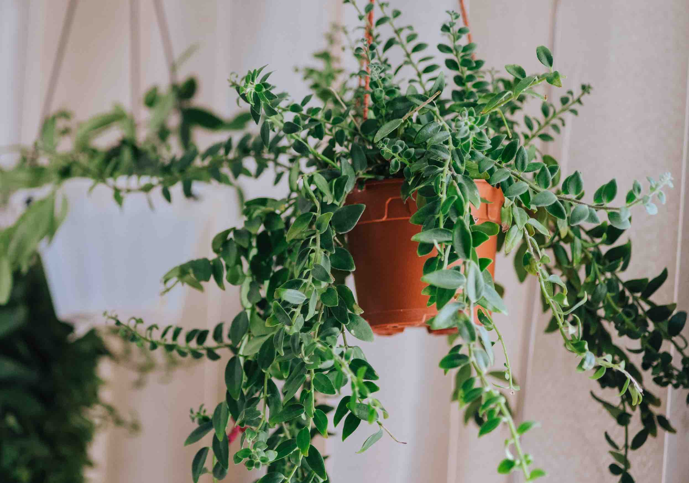

Maranta plants prefer bright, indirect light. Direct sunlight can scorch their leaves, while too little light can lead to poor growth and dull foliage.
Keep the soil consistently moist but not waterlogged. Water when the top inch of soil feels dry. Maranta plants are sensitive to overwatering and can develop root rot if left in soggy soil.
Use a well-draining potting mix rich in organic matter. A mix of peat, perlite, and pine bark works well to provide the necessary drainage and nutrients.
Maranta plants thrive in warm, humid environments. Ideal temperatures range from 65°F to 80°F (18°C to 27°C). Maintain high humidity levels, ideally above 60%, by misting the leaves regularly or using a humidifier.
Maranta, commonly referred to as Prayer Plant, is a fascinating genus of tropical plants renowned for their unique leaf movements and striking foliage patterns. The genus includes around 40-50 species, each showcasing vibrant leaf designs and colors. Maranta plants are highly valued for their ornamental appeal and are popular as houseplants.
Feed Maranta plants with a balanced, water-soluble fertilizer every 2-4 weeks during the growing season (spring and summer). Reduce feeding in the fall and winter when the plant's growth slows down.
Remove any yellow or damaged leaves to maintain the plant's appearance and health. Repot Maranta plants every 1-2 years to refresh the soil and accommodate growth.
Maranta plants are known for their striking, ornamental foliage. The leaves are typically oval-shaped and can vary in color from deep green to vibrant reds and yellows, often with intricate patterns. The leaf movements, which occur in response to light levels, are a unique feature that adds to their charm.
Prayer Plant, Herringbone Plant, Red-veined Prayer Plant, Green Prayer Plant
Order: Zingiberales | Family: Marantaceae | Genus: Maranta
1. Maranta leuconeura 'Erythroneura' (Red-veined Prayer Plant):
- Features dark green leaves with striking red veins.
- Ideal for indoor growing, prefers bright, indirect light and high humidity.
2. Maranta leuconeura 'Kerchoveana' (Green Prayer Plant):
- Known for its light green leaves with darker green patterns.
- Thrives in bright, indirect light and warm, humid conditions.
3. Maranta leuconeura 'Marisela':
- Notable for its lime green leaves with dark green blotches.
- Requires bright, indirect light and well-draining soil.
4. Maranta arundinacea (Arrowroot):
- Known for its edible rhizomes used to make arrowroot powder.
- Prefers full shade and high humidity.
5. Maranta leuconeura 'Kim':
- Features variegated leaves with white, pink, and green patterns.
- Grows best in bright, indirect light and high humidity.